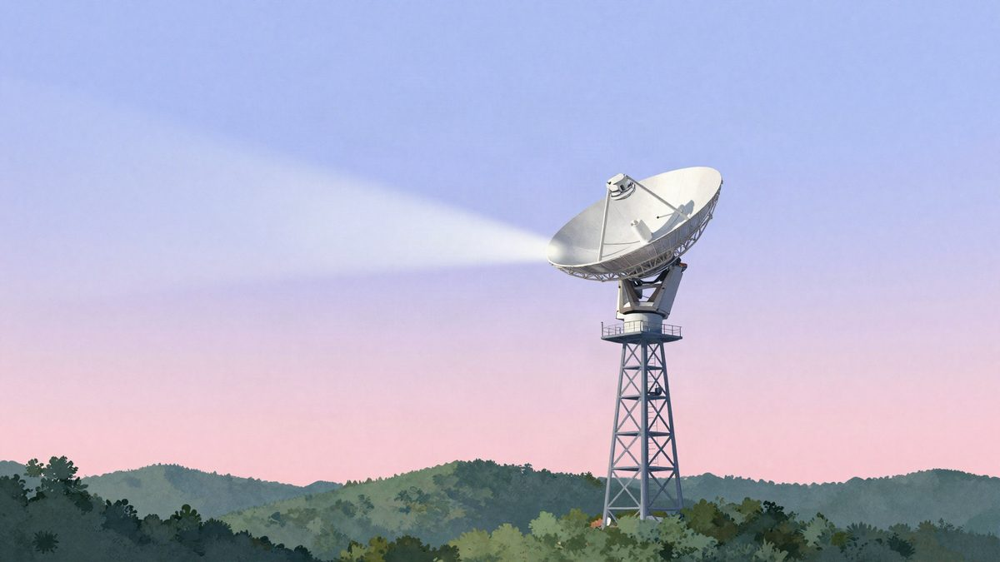

AT&T i AST SpaceMobile: običan smartphone prešao s mobilne mreže na satelit bez prekida veze

AT&T i AST SpaceMobile prvi su put uspješno testirali prebacivanje običnog smartphonea sa zemaljske bazne stanice na satelit usred aktivne veze, blizu mjesta Granite Falls u saveznoj državi Washington. Sudionici tvrde da prebacivanje traje milisekunde, a ne nekoliko sekundi. Kada bi komercijalna usluga mogla krenuti, još nije objavljeno.
AT&T i AST SpaceMobile prvi su put uspješno testirali besprijekorno prebacivanje veze sa zemaljske bazne stanice na satelit. Test je održan 21. listopada blizu mjesta Granite Falls u američkoj saveznoj državi Washington.
Običan smartphone automatski je prešao sa zemaljske mreže na satelit u niskoj orbiti usred aktivne veze. Poziv i prijenos podataka nastavili su se bez prekida. Sudionici projekta tvrde da prebacivanje sada traje milisekunde, a ne nekoliko sekundi.
Tko je što radio
U razvoju su sudjelovali Ericsson i Nokia. Ericsson je AT&T-u isporučio mrežnu opremu i sustave za automatizaciju, a Nokia radijske module i poseban software za satelite. Vezu su osigurali sateliti BlueBird tvrtke AST SpaceMobile, koji imaju velike antenske nizove za prijenos standardnog 4G i 5G signala.
Rješenje je namijenjeno serijskim smartphoneima, pa ne trebaju posebni satelitski uređaji, dodatne SIM kartice ni ručno prebacivanje između načina rada.
Čemu to služi
AT&T test smatra važnim korakom prema uklanjanju područja bez mobilnog signala. Satelitska infrastruktura ne bi trebala zamijeniti zemaljske mreže u gradovima, nego ih dopuniti u teže dostupnim krajevima, na udaljenim cestama i tijekom prirodnih katastrofa.
Kada bi komercijalna usluga mogla krenuti, još nije objavljeno.
Izvor: iXBT